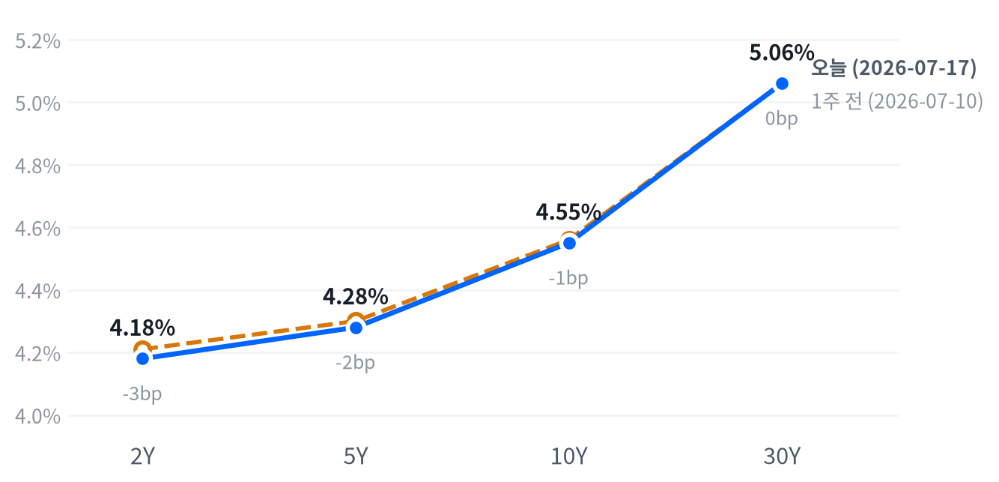

동인: 이번 세션의 방향을 결정한 축은 크게 두 가지다. 첫째는 미·이란 군사 충돌의 격화로, 대이란 공습이 9일째 이어지고 이란이 주말 동안 쿠웨이트 담수화·발전 시설을 이틀 연속 공격했다는 보도와 함께 미군 사상자까지 확인되며 지정학 리스크 프리미엄이 재부각됐다. 둘째는 중국 Moonshot AI의 초대형 오픈웨이트 모델 '키미 K3' 공개로 촉발된 미국 AI·반도체 밸류에이션 재평가 압력으로, 이번 주 빅테크 실적 발표를 앞둔 차익실현 심리와 맞물려 반도체·메모리 관련주의 변동성을 키웠다.
크로스에셋 정합성: 주식·채권·원자재·FX 흐름은 대체로 서로 맞물린다. 지정학 리스크가 브렌트유 강세(+1.14%)와 국채 수익률의 07-20 장중 상승(5Y·10Y·30Y 모두 +5~6bp), 달러 강세(DXY +0.25%)를 동시에 설명하며, 다우·러셀2000 등 경기민감·소형주 중심의 지수 약세도 같은 리스크오프 흐름과 궤를 같이한다. 다만 코스피 폭락(-4.46%) 속에서도 원화가 오히려 소폭 강세(-0.24%)를 보인 점과 삼성전자·SK하이닉스가 -4%대로 급락한 반면 마이크론·웨스턴디지털 등 미국 메모리주는 오히려 2%대 상승한 점은 크로스에셋 관점에서 정합적이지 않은 이례적인 조합으로, 한국발 리스크와 미국 메모리 펀더멘털(DRAM 가격 상승 사이클)이라는 서로 다른 동인이 같은 '메모리' 테마 안에서 정반대로 작동했음을 보여준다.
다음 촉매: 단기적으로는 7/22 GE 버노바를 비롯한 AI 인프라 기업들의 2분기 실적에서 CAPEX·수주 가이던스가 견조하게 유지되는지가 반도체·AI 인프라 섹터의 방향을 가를 변수이며, 미·이란 충돌이 호르무즈 해협 통항에 실질적 차질을 빚을 정도로 확산되는지도 유가·안전자산 흐름을 좌우할 핵심 요인이다. 매크로 측면에서는 이번 주 발표될 추가 지표와 9월 FOMC를 앞둔 금리 인상 프라이싱 변화가 채권·통화 시장의 다음 방향을 결정할 전망이다.
| 지수 | 종가 | 변동 | 등락률 |
|---|---|---|---|
| S&P 500 Growth | 134.69 | +0.43 | +0.32% |
| Nasdaq | 25,508.07 | -12.17 | -0.05% |
| S&P 500 | 7,443.28 | -14.41 | -0.19% |
| Dow | 51,839.26 | -307.16 | -0.59% |
| S&P 500 Value | 229.73 | -1.42 | -0.61% |
| Russell 2000 | 2,942.43 | -19.79 | -0.67% |
| 섹터 | 종가 | 변동 | 등락률 |
|---|---|---|---|
| Energy | 57.94 | +0.26 | +0.45% |
| Communication Services | 110.80 | +0.15 | +0.14% |
| Technology | 175.71 | +0.12 | +0.07% |
| Consumer Staples | 84.86 | -0.33 | -0.39% |
| Financials | 56.04 | -0.22 | -0.39% |
| Real Estate | 45.23 | -0.19 | -0.42% |
| Utilities | 44.94 | -0.23 | -0.51% |
| Consumer Discretionary | 114.61 | -0.83 | -0.72% |
| Industrials | 178.12 | -1.29 | -0.72% |
| Materials | 50.03 | -0.50 | -0.99% |
| Health Care | 159.25 | -1.84 | -1.14% |
나스닥·S&P500·러셀2000 세 지수는 공통적으로 개장 직후 첫 30분(09:30 ET) 만에 세션 고점을 형성한 뒤 오후 내내 미끄러지는 동일한 패턴을 그렸다. 나스닥은 시가 대비 +0.35% 고점을 오전 일찍 찍은 뒤 낙폭을 키워 마감 직전인 15:30에 시가 대비 -0.87%까지 밀렸고 종가는 그 저점 부근인 25,508.07에서 형성됐다.
S&P500도 09:30에 +0.32% 고점을 찍었다가 15:00에 -0.65% 저점까지 반납했고, 러셀2000은 09:30 고점(+0.34%) 이후 15:30 저점(-0.87%)까지 거의 그대로 흘러내리며 사실상 저가 마감에 가까웠다.
런던장 중반 이란 외무부 대변인의 외교적 타결 시사 발언으로 투자심리가 잠시 개선됐다는 보도가 있었으나 되돌림은 오래가지 못했고, 미군 사상자 발생과 쿠웨이트 시설 공격 소식이 이어지며 오후 들어 매도세가 재차 강해졌다.
엔비디아는 지수보다 더 큰 진폭을 보이며 09:30 고점(+0.86%)에서 15:00 저점(-1.79%)까지 흘러내렸는데, 이는 중국 Moonshot AI의 초대형 모델 '키미 K3' 공개 이후 재부각된 미국 AI·반도체 밸류에이션 경계 심리가 개별 종목 단에서 더 크게 반영된 결과로 보인다.
섹터별로는 브렌트유 강세 수혜를 입은 에너지(+0.45%)와 기술(+0.07%)·커뮤니케이션서비스(+0.14%)만 상승 마감했고, 헬스케어(-1.14%)·소재(-0.99%)·산업재·임의소비재(각 -0.72%) 등 경기민감·방어 섹터가 고루 약세를 보여, 이날 하락은 특정 업종에 국한되지 않은 전방위 리스크오프였다.
이번 하락은 대형 지수 전반의 균일한 매도라기보다 지정학 리스크와 AI 밸류에이션 경계가 겹친 국지적 조정에 가깝다. 다우(-0.59%)·러셀2000(-0.67%)의 낙폭이 나스닥(-0.05%)보다 오히려 컸고, S&P500 Growth(+0.32%)가 Value(-0.61%)를 웃돈 점은 이번 매도가 성장주 집중 매물이 아니라 유가 급등에 따른 경기민감·소형주 부담이 더 크게 반영됐음을 시사한다.
섹터 전반이 고르게 약세(에너지·기술·통신 3개만 플러스)를 보인 점은 개별 이벤트보다 지정학 리스크 프리미엄이 시장 전체에 걸쳐 작동했다는 해석에 무게를 싣는다.
포지셔닝 관점에서는 지정학 리스크가 유가·안전자산에 미치는 영향을 우선 추적하되, 다우·러셀2000이 추가로 하루 이상 1%대 낙폭을 기록하며 VIX가 확대될 경우 리스크오프가 전방위로 번질 신호로 보고 경기민감 섹터 비중을 재점검할 필요가 있다.
| 만기 | 수익률(07-17, FRED 확정) | 전일대비 | 1주 전(07-10) | 주간 변화 | 07-20 장중 참고치(Yahoo) |
|---|---|---|---|---|---|
| 2Y | 4.18% | +2bp | 4.21% | -3bp | 데이터 없음 |
| 5Y | 4.28% | 0bp | 4.30% | -2bp | 4.33% (+5bp) |
| 10Y | 4.55% | -2bp | 4.56% | -1bp | 4.60% (+5bp) |
| 30Y | 5.06% | -3bp | 5.06% | 0bp | 5.12% (+6bp) |

2s10s 스프레드는 07-17 FRED 확정 기준 +37bp로, 1주 전(07-10, 2Y 4.21%·10Y 4.56% 기준 +35bp) 대비 +2bp 확대됐다. 주간 기준으로 2Y가 -3bp, 5Y가 -2bp, 10Y가 -1bp 하락한 반면 30Y는 보합(0bp)을 유지해 단기물일수록 더 크게 강세를 보이며 커브가 완만히 스티프닝됐다.
주간 기준 커브 변화는 단기물이 장기물보다 더 크게 강세(2Y -3bp vs 30Y 0bp)를 보인 완만한 불 스티프닝으로, 6월 CPI·PPI 연속 하회로 확인된 디스인플레이션 신호가 단기물 금리에 우선 반영된 결과로 해석된다. 다만 30Y가 하락 없이 보합에 머문 점은 순수한 정책 완화 기대만으로 설명하기 어렵고, 유가 상승이 자극하는 기간프리미엄·인플레이션 재점화 우려가 장기물의 추가 하락을 제한한 것으로 보인다.
07-20 장중 Yahoo 참고치에서 5Y·10Y·30Y가 일제히 전일 대비 5~6bp씩 오른 점은 주말 사이 격화된 미·이란 충돌과 유가 급등이 국채시장에 베어 요소로 새롭게 얹혔음을 보여주며, 이 흐름이 이어지면 지난주의 완만한 불 스티프닝이 이번 주 베어 스티프닝(장기물 금리가 단기물보다 더 크게 오르는 형태) 쪽으로 무게중심을 옮길 개연성이 있다.
듀레이션 전략 측면에서는 지난주 단기물 강세가 이미 디스인플레이션 서프라이즈를 상당 부분 소화한 만큼 여기서 추가 듀레이션 확대보다는 관망이 낫고, 장기물은 유가·지정학 리스크가 이번 주 재차 확대될 경우 변동성이 커질 수 있어 인플레이션 헤지(TIPS 등) 병행 없이는 30Y 비중을 늘리지 않는 편이 합리적이다.
| 페어 | 종가 | 변동 | 등락률 |
|---|---|---|---|
| DXY | 101.00 | +0.25 | +0.25% |
| USD/KRW | 1,475.35 | -3.50 | -0.24% |
| USD/JPY | 162.48 | +0.10 | +0.06% |
| EUR/USD | 1.1416 | -0.0029 | -0.25% |
장중 흐름(USD/JPY): 엔/달러는 도쿄·런던장 초반인 12:30 ET에 시가 대비 -0.19%로 저점을 찍은 뒤 되돌림에 들어가 뉴욕장 마감 무렵인 17:00 ET에 +0.06%로 세션 고점을 형성, 하루 종일 완만한 엔 약세 흐름을 이어갔다.
DXY는 +0.25% 강세를 보였다. 미·이란 충돌 격화에 따른 안전자산 수요와 07-20 장중 국채 수익률 상승(위 채권 섹션 참고)이 겹친 결과다.
반면 원화는 -0.24%로 오히려 소폭 강세를 보여 달러인덱스와 반대 방향으로 움직였는데, 이날 코스피가 4%대 폭락하며 국내 메모리주(-4%대)를 중심으로 자금 이탈이 심했던 것을 감안하면 통상적으로 예상되는 원화 약세(달러/원 상승)와는 다른 조합이어서 이례적이다. 엔화는 안전자산 수요에도 불구하고 소폭 약세(+0.06%, 즉 달러 강세)를 보여 미 국채 수익률 상승에 따른 미·일 금리차 확대가 안전자산 수요보다 더 크게 작용했다.
유로/달러는 -0.25% 하락해 달러 강세 국면에 순응했다.
| 품목 | 종가 | 변동 | 등락률 |
|---|---|---|---|
| WTI | 82.59 | +0.10 | +0.12% |
| Brent | 89.10 | +1.00 | +1.14% |
| Natural Gas | 2.84 | -0.07 | -2.30% |
| Gold | 4,010.00 | -2.70 | -0.07% |
장중 흐름: WTI는 아시아·유럽장이던 이른 새벽 02:00 ET에 시가 대비 +0.67% 고점을 찍은 뒤 뉴욕 개장을 앞둔 07:30 ET에 -4.85%까지 급락하는 큰 변동성을 보였고, 이후 정규장에서 낙폭을 상당폭 되돌리며 소폭 플러스(+0.12%)로 마감했다. 금(Gold)은 07:30 ET에 시가 대비 +0.43% 고점을 형성한 뒤 오전 10:00에 -0.67% 저점까지 밀렸고 종가는 저점보다는 다소 반등한 수준에서 마감했다.
최대 변동 및 해석: 이날 최대 변동폭은 천연가스(-2.30%)로, 계절적 수요 둔화 흐름이 원유·귀금속과는 반대 방향으로 큰 폭 하락을 이끌었다. 브렌트유(+1.14%)는 WTI(+0.12%)보다 큰 상승폭을 기록했는데, 이는 호르무즈 해협 통항 리스크와 미군 사상자 발생 등 지정학 프리미엄이 국제 벤치마크에 더 크게 반영된 결과로 풀이되며, WTI는 장중 새벽 고점 이후 07:30 저점까지 5%p에 육박하는 급락을 겪었다가 정규장에서 되돌림한 만큼 여전히 변동성이 큰 구간에 놓여 있다. 금은 -0.07%로 보합권 마감했지만 장중 한때 -0.67%까지 밀렸다가 되돌린 점에서, 안전자산 수요와 달러 강세·국채금리 상승이라는 반대 방향 힘이 하루 안에서 팽팽히 맞선 모습이다.
| 자산군 | 판단 | 근거 |
|---|---|---|
| 주식(대형/성장) | 중립·선별 대응 | 나스닥 낙폭 제한적(-0.05%)이고 Growth(+0.32%)가 Value(-0.61%) 상회, 다만 AI 밸류에이션 재평가 압력 상존 |
| 주식(경기민감/소형) | 비중 축소·경계 | 다우(-0.59%)·러셀2000(-0.67%)이 지수 중 최대 낙폭, 헬스케어·소재·산업재 등 전방위 약세 |
| 채권(듀레이션) | 중립·관망 | 주간 기준 완만한 불 스티프닝이나 07-20 장중 전 구간 금리 상승(+5~6bp)으로 베어 요소 재부각 |
| FX(달러) | 단기 강세 우위 | 안전자산 수요와 국채금리 상승이 달러 지지(DXY +0.25%), 다만 원화는 반대 방향 이례적 강세로 방향성 재확인 필요 |
| 원자재(유가) | 변동성 확대 경계, 방향성 배팅 자제 | WTI 장중 새벽 고점 이후 07:30 저점까지 5%p 근접 낙폭, 호르무즈 리스크가 실시간으로 반영 |
| 메모리/DRAM | 지역별 차별화 대응 | 미국 메모리주(가격 결정력·실적 모멘텀)는 눌림목 매수 관점 우위, 한국 메모리주는 코스피 리스크오프 진정 확인 후 접근 |
| AI 인프라 | 광네트워킹·전력인프라 상대 선호 | 루멘텀·마벨·코히런트·GE버노바·버티브 전 종목 상승, 반도체 밸류에이션 경계 속에서도 개별 펀더멘털 강세 유지 |
삼성전자 -4.31% / SK하이닉스 -4.23%: 이날 메모리 6종 중 최대 낙폭. 코스피가 4%대(-4.46%) 폭락하며 프로그램 매물을 동반한 패닉셀링이 있었다는 보도가 있었고, 미국 반도체주 약세 동조·미·이란 지정학 리스크·중국 Moonshot AI '키미 K3' 공개발 밸류에이션 재평가 우려가 복합적으로 지목된다.
루멘텀 +4.47% / 마벨 +3.32%: AI 인프라 그룹 내 최대 상승. 같은 '반도체·AI' 테마 안에서 한국 메모리주와 정반대 방향으로 움직였다. 최근 몇 주간 이어진 AI 데이터센터 광연결 수요 랠리의 연장선이다.
헬스케어 -1.14%: 이날 S&P 11개 섹터 중 최대 낙폭 섹터로, 통상 방어주로 분류되는 업종인데도 낙폭이 가장 컸다 — 이번 매도가 특정 스타일이 아니라 전방위 리스크오프에 가까웠다는 방증이다.
| 종목 | 종가 | 변동 | 등락률 |
|---|---|---|---|
| Western Digital | 487.42 | +10.20 | +2.14% |
| Micron | 865.46 | +16.51 | +1.94% |
| Seagate | 802.45 | +14.79 | +1.88% |
| Nvidia | 203.28 | +0.47 | +0.23% |
| SK hynix | 1,764,000 | -78,000 | -4.23% |
| Samsung Elec | 244,000 | -11,000 | -4.31% |
미국 메모리주(마이크론 +1.94%, 웨스턴디지털 +2.14%, 시게이트 +1.88%)와 한국 메모리주(삼성전자 -4.31%, SK하이닉스 -4.23%)가 같은 날 정반대 방향으로 움직이는 뚜렷한 디커플링이 나타났다.
한국 측에서는 코스피가 4%대(-4.46%) 폭락하며 6,516.28로 마감, 프로그램 매물 출회를 동반한 패닉셀링이 있었다는 보도가 나온다. 직접적 촉매로는 미국 반도체주 약세 동조, 미·이란 지정학 리스크 고조, 중국 Moonshot AI '키미 K3' 모델 공개로 촉발된 AI 인프라 과잉투자·밸류에이션 재평가 우려가 지목되며, 프리마켓 단계에서 이미 삼성전자·SK하이닉스가 5% 넘게 하락 출발했다는 보도도 있다.
미국 메모리주 강세는 펀더멘털·가격 결정력에 근거한다는 분석이 우세하다. UBS는 DDR 계약가격 전망을 3분기 +32% QoQ, 4분기 +18% QoQ로 상향했고, 1분기 재래식 DRAM 계약가는 QoQ +93~98% 급등(삼성 DRAM ASP는 같은 기간 +90% 이상)했으며 삼성이 3분기 추가 20% 인상을 추진 중이라는 보도가 있다. 마이크론은 회계 3분기 매출이 전년 대비 +346%인 415억달러를 기록했다고 전해진다.
이날의 디커플링은 같은 메모리 테마 안에서도 지역별 리스크 요인이 서로 반대로 작동한 결과다. 미국 메모리주는 DRAM·HBM 가격 상승 사이클과 실적 모멘텀이라는 펀더멘털에, 한국 메모리주는 코스피 전반의 리스크오프·프로그램 매물이라는 수급 요인에 더 크게 반응한 것으로 보인다. 미국 메모리주는 가격 결정력이 이어지는 한 눌림목 매수 관점을 유지할 수 있으나, 한국 메모리주는 코스피 패닉셀링이 진정되고 개별 종목의 펀더멘털(DRAM 가격 전가력)이 재확인될 때까지는 신규 매수보다 관망이 합리적이다.
| 종목 | 분야 | 종가 | 변동 | 등락률 |
|---|---|---|---|---|
| Lumentum | 광통신/포토닉스 | 765.55 | +32.73 | +4.47% |
| Marvell | 반도체/ASIC | 194.94 | +6.26 | +3.32% |
| Coherent | 광통신/포토닉스 | 285.40 | +7.80 | +2.81% |
| GE Vernova | 발전/전력 인프라 | 1,079.18 | +21.34 | +2.02% |
| Vertiv | 데이터센터 인프라(열관리·전력) | 291.67 | +2.11 | +0.73% |
광네트워킹/포토닉스 그룹(루멘텀 +4.47%, 마벨 +3.32%, 코히런트 +2.81%)이 이날 AI 인프라 그룹 내 최대 상승폭을 기록했다. 마벨은 최근 Computex 2026 키노트에서 언급된 'AI 인프라 확장에 따른 광연결 수요 증가' 서사와 개별 애널리스트의 목표주가 상향이 반복적으로 랠리를 견인해온 흐름의 연장선으로 보이며, 다만 07-20 당일 급등의 구체적인 단일 촉매는 뚜렷하게 확인되지 않는다.
전력/데이터센터 인프라 그룹(GE 버노바 +2.02%, 버티브 +0.73%)도 상승세에 동참했다. GE 버노바는 7/22 2분기 실적 발표를 앞두고 있으며, 컨센서스는 매출 약 107억달러(+18% YoY), EPS 3.23달러(+74% YoY)로 실적 기대감에 따른 사전 매수세가 유입됐을 가능성이 거론된다. 연초 이후 GE 버노바는 +62% 상승했고 데이터센터向 장비 수주가 1분기 기준 24억달러(유기적 수주 +71%)로 이미 전년 연간치를 상회했다는 보도가 있다.
버티브는 1분기 매출이 전년 대비 +30% 이상(26.5억달러) 증가하는 실적 모멘텀과 AI 데이터센터發 전력망 부담이라는 테마가 이어지며 GE 버노바와 함께 자주 묶여 거론된다.
AI 인프라 그룹 전 종목이 상승한 점은 같은 날 한국 메모리주가 급락하고 미국 지수 상당수가 약세를 보인 것과 대비된다. 광네트워킹 그룹은 반도체 밸류에이션 경계 심리 속에서도 개별 수요 서사가 견조하게 유지되고 있다는 신호로 읽히며, 전력/시설 그룹은 7/22 GE 버노바 실적을 핵심 트리거로 두고 수주 잔고 기반의 상대적 방어력을 재확인할 수 있을지 지켜볼 필요가 있다.
포트폴리오 관점에서는 반도체 밸류에이션 재평가 국면이 진정될 때까지 광네트워킹·전력인프라 비중을 유지하되, 마벨·코히런트·루멘텀처럼 최근 급등한 종목은 추격매수보다 눌림목 확인 후 대응하는 편이 합리적이다.
| 지표 | Actual | Forecast | Previous | 발표일 | 판정 |
|---|---|---|---|---|---|
| Initial Jobless Claims (주간, 7/11 종료) | 208,000 | 217,000 | 216,000 | 2026-07-17 | 하회▼ |
| Initial Claims 4주 평균 | 214,250 | — | 219,000 | 2026-07-17 | — |
| Continuing Jobless Claims (7/4 종료) | 1,805,000 | — | 1,821,000 | 2026-07-17 | — |
| Nonfarm Payrolls 증감 (6월) | +57K | — | +129K | 2026-06월 기준 | — |
| 실업률 (6월) | 4.2% | — | 4.3% | 2026-06월 기준 | — |
| 평균시급 MoM (6월) | 0.35% | — | 0.27% | 2026-06월 기준 | — |
| JOLTS 구인건수 (5월) | 7,594K | — | 7,585K | 2026-05월 기준 | — |
| 지표 | Actual | Forecast | Previous | 발표일 | 판정 |
|---|---|---|---|---|---|
| Philadelphia Fed 제조업지수 (7월) | 41.4 | 13.0 | 10.3 | 2026-07-16 | 상회▲ |
| Industrial Production MoM (6월) | 0.08% | 0.2% | 0.14% | 2026-07-16 | 하회▼ |
| Durable Goods Orders MoM (5월) | -4.47% | — | 8.51% | 2026-05월 기준 | — |
| New Home Sales (5월) | 580K | — | 626K | 2026-05월 기준 | — |
| Existing Home Sales (6월) | 4,090K | — | 4,190K | 2026-06월 기준 | — |
| 실질GDP 성장률 QoQ 연율 (1분기) | 2.1% | — | 0.5% | 2026년 1분기 기준 | — |
| 지표 | Actual | Forecast | Previous | 발표일 | 판정 |
|---|---|---|---|---|---|
| Retail Sales MoM (6월) | 0.22% | 0.2% | 1.02% | 2026-07-16 | 부합= |
| Michigan 소비자심리지수 (5월) | 44.8 | — | 49.8 | 2026-05월 기준 | — |
| 지표 | Actual | Forecast | Previous | 발표일 | 판정 |
|---|---|---|---|---|---|
| CPI YoY (6월) | 3.73% | ~3.8~3.9% | 4.27% | 2026-07-14 | 하회▼ |
| CPI MoM (6월) | -0.42% | 약 -0.1~-0.2% | 0.47% | 2026-07-14 | 하회▼ |
| Core CPI YoY (6월) | 2.81% | 약 2.9% | 2.96% | 2026-07-14 | 하회▼ |
| Core CPI MoM (6월) | -0.02% | 약 0.2% | 0.21% | 2026-07-14 | 하회▼ |
| PPI 최종수요 MoM (6월) | -0.28% | — | 0.62% | 2026-07-15 | — |
| PCE 물가지수 YoY (5월) | 4.07% | — | 3.80% | 2026-05월 기준 | — |
| Core PCE YoY (5월) | 3.41% | — | 3.32% | 2026-05월 기준 | — |
| Michigan 1년 기대인플레이션 (5월) | 4.8% | — | 4.7% | 2026-05월 기준 | — |
6월 CPI·PPI·Core CPI가 나란히 컨센서스를 하회하며 디스인플레이션을 확인시켰음에도, 미·이란 충돌 격화와 유가 급등이 인플레이션 재점화 우려를 자극하며 국채 수익률은 07-20 장중 5~6bp씩 반등해 지난주 하락분 일부를 되돌렸다(위 채권 섹션 참고).
일부 보도는 9월 FOMC의 금리 인상 가능성이 전일 대비 47%에서 53%로 상승했다고 전하지만, 다른 시점의 CME FedWatch 스냅샷은 이보다 높은 수준(약 65%, 혹은 누적 25bp 인상 확률 50.6%)을 보여 스냅샷 시점별 편차가 커 이 수치는 참고용으로만 제시한다. 다만 방향성만 놓고 보면 디스인플레이션 지표에도 불구하고 시장이 '인하'가 아닌 '인상 리스크'를 여전히 상당폭 가격에 반영하고 있다는 서사는 일관되게 유지되고 있다.
신규 실업수당 청구건수가 컨센서스(217K)를 크게 하회한 208K로 나오며 2개월래 최저 수준을 기록한 점, 필라델피아 연은 제조업지수가 41.4로 컨센서스(약 13)를 큰 폭 상회하며 2021년 11월 이후 최고 수준을 기록한 점은 '경기 재가속' 서사를 뒷받침하는 반면, 6월 비농업고용(+57K)이 컨센서스(+115K)를 크게 밑돈 점은 이와 상충돼 지표 간 혼재된 신호가 이어지고 있다.
심리(선행): 필라델피아 연은 제조업지수가 컨센서스(13.0)를 큰 폭 상회한 41.4를 기록해 뚜렷한 개선 신호를 보낸 반면, 미시간 소비자심리지수(5월 44.8, 전월 49.8)는 오히려 악화돼 기업심리와 소비자심리가 엇갈린다.
활동(중행): 산업생산 MoM(6월 0.08%, 컨센서스 0.2% 하회)이 예상보다 둔화됐고 내구재수주(5월 -4.47%)·신규주택판매(5월 58만건)·기존주택판매(6월 409만건)도 전월 대비 모두 감소해 활동 지표는 전반적으로 둔화 신호가 우세하다. 다만 1분기 실질GDP(2.1%)는 직전 분기(0.5%) 대비 개선돼 시차가 큰 지표에서는 개선이 확인된다.
성적표(후행): 고용은 6월 비농업고용(+57K)이 컨센서스(+115K)를 크게 하회했지만 실업률은 4.2%로 오히려 낮아지고 신규 실업수당 청구건수도 컨센서스를 하회하는 등 방향이 엇갈리며, 인플레이션은 CPI·Core CPI·PPI가 나란히 컨센서스를 하회해 후행 지표 중에서는 가장 뚜렷한 디스인플레이션 흐름을 보였다.
축 간에는 선행(필라델피아 연은 서프라이즈)과 중행(산업생산·내구재수주 둔화)이 상충하는 구도이며, 선행지표의 개선이 아직 활동·고용 지표로 옮겨붙지 않은 전형적인 지표 시차 국면이다.
기본 시나리오(확률 우위): 향후 1~3개월은 디스인플레이션 기조가 이어지되 유가발 노이즈로 월별 변동성이 커지는 완만한 둔화 국면이 이어질 공산이 크다. 6월 CPI·PPI·Core CPI의 연속 하회와 신규 실업수당 청구건수의 견조함이 이 시나리오를 뒷받침한다.
대안 시나리오: 미·이란 충돌이 호르무즈 해협 통항에 실질적 차질을 빚을 정도로 확산돼 유가가 추가로 급등할 경우, 3분기 CPI가 재반등하며 9월 FOMC에서 시장이 가격에 반영한 인상 가능성이 현실화되는 쪽으로 무게가 실릴 수 있다. 이 경우를 가를 핵심 일정은 8월 초 발표될 7월 고용지표, 8월 중순 7월 CPI, 그리고 9월 FOMC다.
자산배분 관점에서는 기본 시나리오 하에서 단기 듀레이션·선별적 성장주 비중이 유효하지만, 대안 시나리오로 기울 조짐(유가 90달러 상회 지속, 국채금리 추가 상승)이 뚜렷해지면 신속히 방어주·짧은 듀레이션 중심으로 전환하는 트리거 기반 대응이 바람직하다.
본 리포트의 시장 수치는 market_data.json·intraday.json, 경제지표 Actual/Previous는 econ_indicators.json(FRED 확정치)에서 발췌했으며, Forecast·뉴스·FedWatch 수치는 research_notes.md에 기재된 공개 보도(Yahoo Finance, Epoch Times, TheStreet, Bloomberg, CNBC, Fortune, Benzinga, Seoul Economic Daily, TradingKey, 24/7 Wall St., Motley Fool, PNC, investinglive, CBS News, Advisor Perspectives 등)를 출처로 한다.